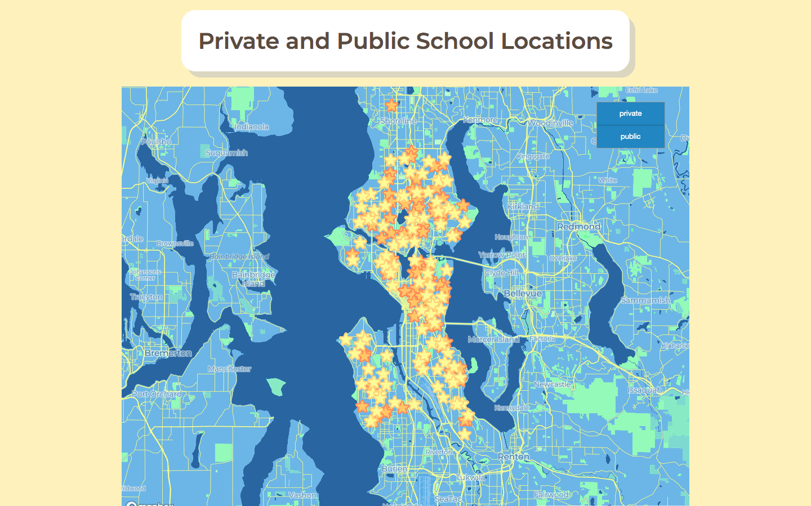
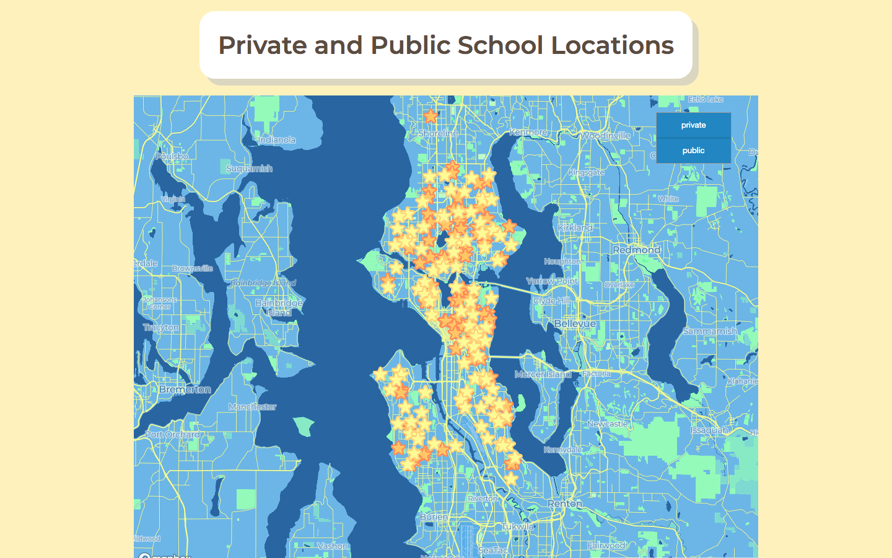

Portfolio
Click on a map below to view the full working version
Click on a map below to view the full working version
Currently pursuing MS in Geospatial Technologies at UW Tacoma
Graduated from UW Seattle in Spring 2020 with a BA in Geography
My interests are map creation and web design. My motto is to create maps that reflect socioeconomic issues that are not only easy to understand but also pleasing to look at.